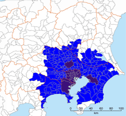

Area:
Category:
Stations:
| 23 Wards | Tokyo | Greater Tokyo | |
| Population (millions) | 13.5 | 9.2 | 38 |
With its 13.5 million habitants Tokyo is the second largest capital city in the world and largest in Japan.
The central area of Tokyo houses 9.2 million habitants.
With its 38 million habitants Greater Tokyo is considered the biggest metropolis in the world.
Tokyo accounts for over a third of Japanese GDP.
If it was a country, its (estimated) $1,900 billion GDP would be the 10th economy in the world.
Tokyo accounts for over a third of Japanese GDP.
If it was a country, its (estimated) $1,900 billion GDP would be the 10th economy in the world.
Greater Tokyo accounts for over a third of the Japanese GDP with an estimated $1,940 billion GDP.
Everyday a staggering 37 million people ride any of the 121 train lines within Tokyo and Greater Tokyo.
The Yamanote Line is the most iconic line in Tokyo. It is a circular line that connectst the major areas in Tokyo and transports 3.7 million people per day.
Shinjuku Station is the busiest station in the world with 3.7 million unique riders going through it.
Second busiest station with 2.7 million people, Ikebukuro is know as the little Shinjuku.
One of the most popular areas in Tokyo and major exchanger, Shibuya station sees 2.2 million people crossing its gates everyday.
Tokyo city was originally formed by 23 wards (independent municipalities now) that make the core of the city. These include the well known Shinjuku or Shibuya for example.
Tokyo consist of the 23 Special Wards, 26 cities, 5 towns and 8 villages that together form what it is called now Tokyo Metropolis since 1943.
It is commonly called Greater Tokyo to the giant metropolis formed by: Tokyo itself, Yokohama, Kawasaki, Sagamihara, Chiba and Saitama.
